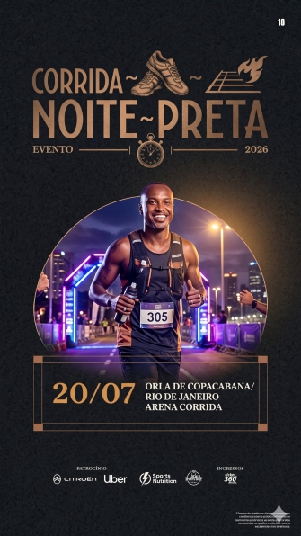
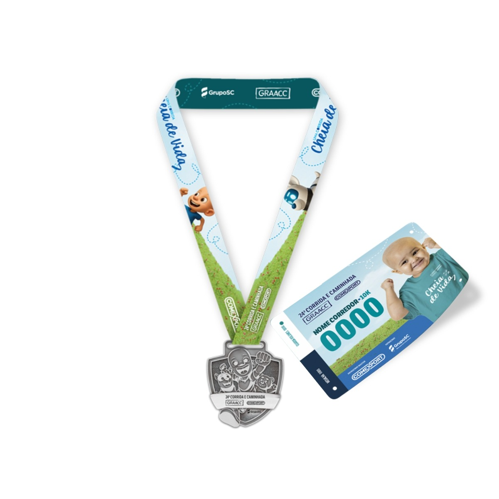
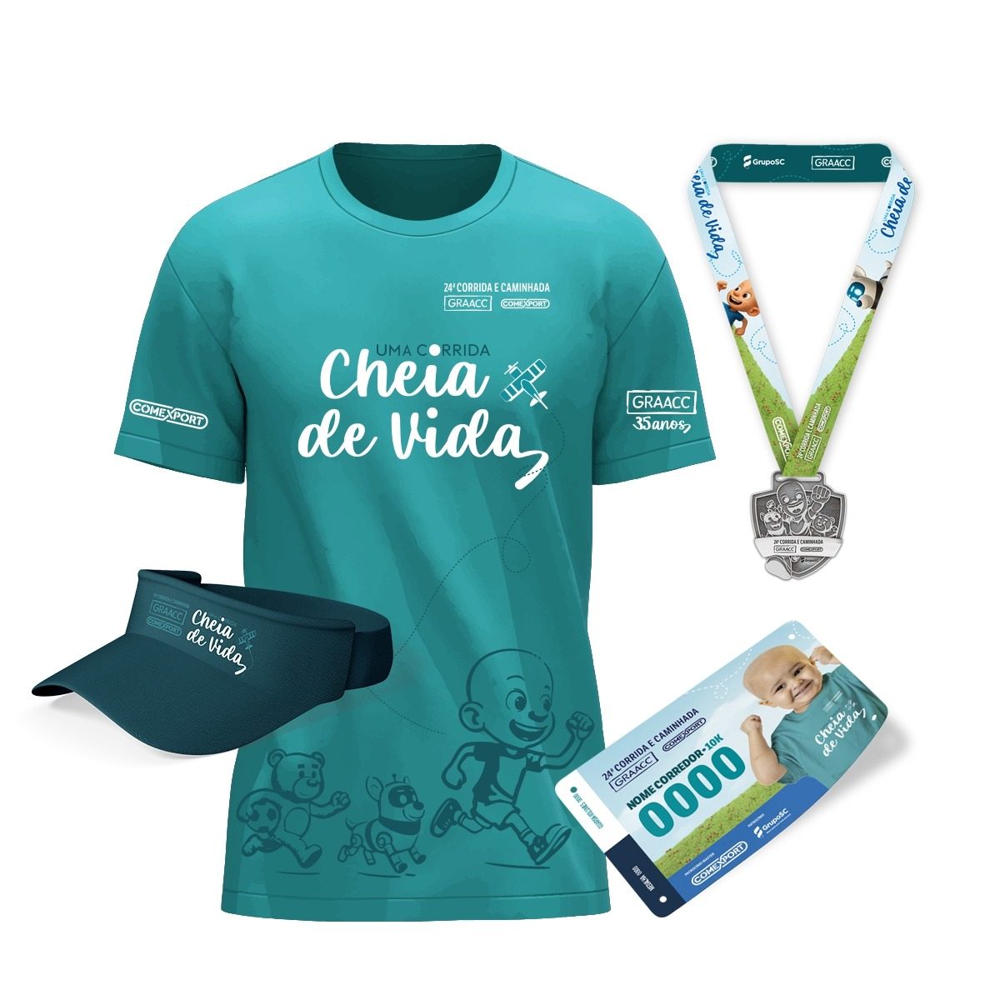
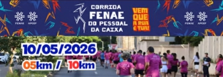

Corra o nascer do dia pelas ruas históricas da cidade.
Sobre o evento
A Maratona Aurora nasceu de um grupo de corredores que queria ver o sol subir sobre Sorocaba em movimento. Mais de uma década depois, virou um encontro anual que reúne iniciantes, veteranos e famílias inteiras num percurso que cruza praças, o centro histórico e a orla do parque.
Para 2026 ampliamos a estrutura: novos pontos de hidratação, cronometragem por chip, área kids e um pós-prova com música e gastronomia local. Mais que uma prova — uma manhã para celebrar.

Largada às 06h00Kit do atleta
Dois pacotes pensados para diferentes perfis de corredor. Retirada na Expo Aurora, na semana da prova.


Inscrição
Quanto antes você garante a vaga, melhor o preço. Os lotes viram conforme se esgotam.
Experiência
Muito além da corrida. A manhã inteira pensada para você e sua família.
Palco com DJ, aquecimento coletivo e premiação ao vivo.

Recreação monitorada enquanto você corre tranquilo.
Produtores locais, cafés especiais e opções saudáveis.
Alongamento guiado e massagem pós-prova gratuita.
Logística
A arena fica no Parque das Águas. Planeje sua chegada com antecedência.
Estacionamento parceiro a 400m da arena, com vagas limitadas.
Linhas 12, 34 e 56 param em frente ao parque aos finais de semana.
Ponto de embarque e desembarque sinalizado no Portão B.
Bicicletário gratuito e monitorado durante todo o evento.
Memórias
Um pouco do que você vai viver. Clique para ampliar.
Dúvidas frequentes
A retirada acontece na Expo Aurora, na semana da prova, mediante documento com foto e comprovante de inscrição. Terceiros precisam de autorização assinada.
Sim. A transferência de titularidade fica disponível na sua Área do Atleta até 15 dias antes do evento, sem custo adicional.
Os 5km são abertos a partir de 12 anos com autorização dos responsáveis. As distâncias de 10km e 21km exigem idade mínima de 18 anos completos no dia da prova.
Sim, o tempo limite total é de 3h30 a partir da largada. Os pontos de apoio e o trânsito são liberados gradualmente após esse horário.
Quem faz acontecer
Garanta sua vaga no lote atual antes que ele esgote. Bora correr?
Quero me inscrever